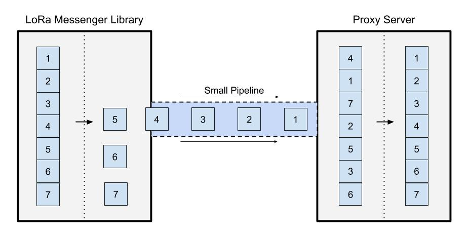

Project Description
Mobile Crowdsensing Framework over Low-power Wide Area Networks
Overview
As the world becomes increasingly reliant on the internet, providing ubiquitous connectivity also becomes vital. Current technology that connects devices over a large area relies on very expensive cell towers or satellites. Due to the cost, these technologies are rarely set up to service rural communities, cutting these people off from the information and opportunities provided by the internet. A new technology, Long Range Wide Area Networks (LoRaWAN), has the potential to change this by providing connectivity that is both far reaching and inexpensive.
Our client, Dr. Vigil-Hayes and her research lab CANIS, have been working with this technology for about a year. Their intention is to take advantage of LoRaWANs long range in order to increase connectivity in rural areas and support mobile crowdsensing endeavors. In these cases, LoRaWAN will be able to provide the services of a cell tower or satellite connection at a fraction of the cost and power consumption.
Figure 1: A breif diagram of what our client needs
As it shown in Figure 1, Both of theses applications require mobile devices, such as smartphones, be able to connect over LoRaWAN. Traditional network technologies, such as WiFi and broadband transmissions, differ greatly from the underlying technology of LoRaWAN. There is presently no generic interface that would allow a smartphone or similar device to transmit messages over LoRaWAN, making it impossible to interact with any web applications. This project will make it possible for Android phones and, potentially, other devices to communicate over LoRaWAN.
To achieve this, we will be creating an interface for mobile developers that abstracts the process of transmitting a message over LoRaWAN. This interface will be comprised of a library for Android development and a proxy server. The library will encode messages and send them to the LoRaWAN network. These messages will then be received by the proxy server which will decode them and forward them to their intended destination.
Figure 2: Fragmentation Diagram that shows how the message will get fragmented on the LoRa Messenger Library as a best effort fragmentation and then gets resumbled back again on the proxy server.
Accomplishing this will allow our client to dramatically increase connectivity, especially in rural or underdeveloped areas. For crowdsensing applications that only require periodic transmissions of data, LoRaWAN could displace cell and satellite as the network of choice. With LoRaWAN, connectivity can become more ubiquitous to suit the networked world's needs.
The initial concept for this project was provided by our sponsor, Dr. Vigil-Hayes in the form of a capstone project proposal.